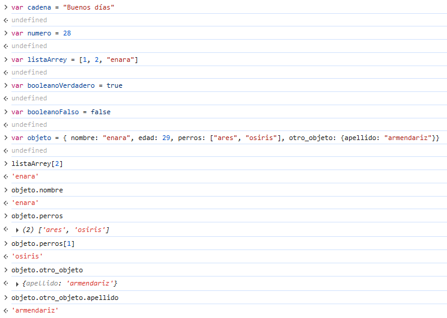
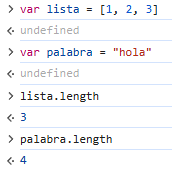
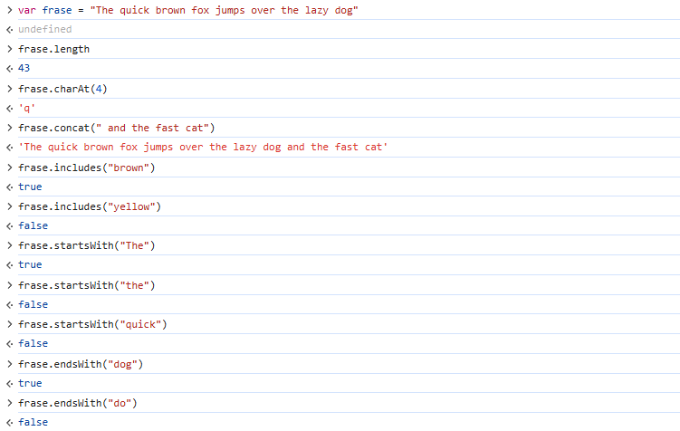
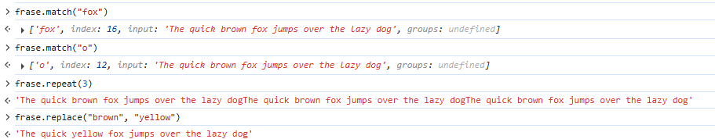
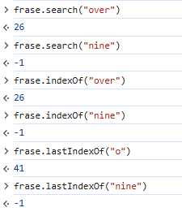
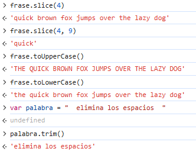
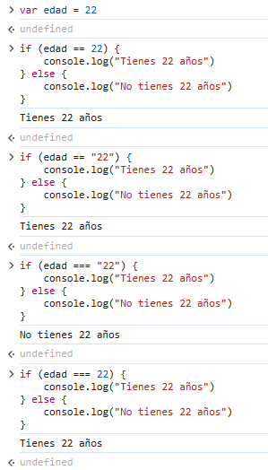
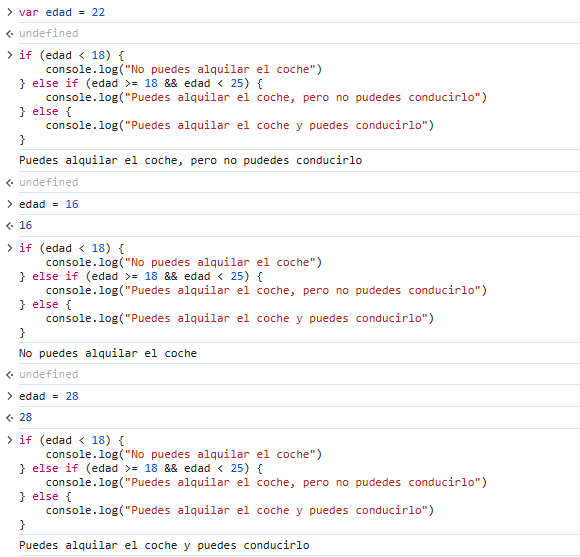
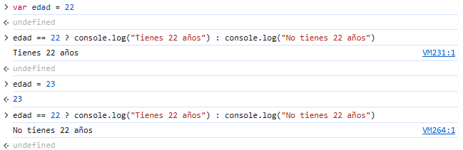
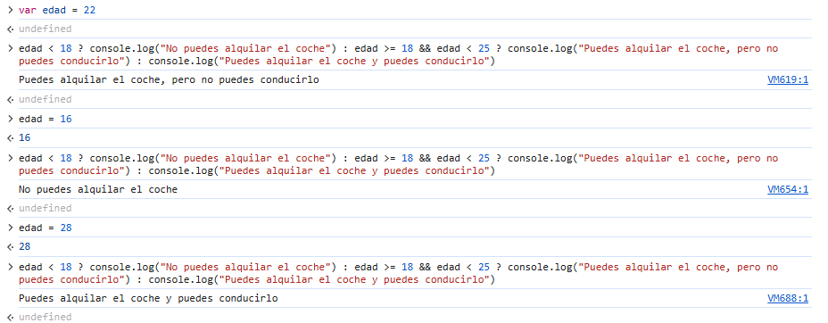

La característica más importante de JacaScript (JS), la cual la diferencia de cualquier otro lenguaje de programación, es el hecho de que es el único lenguaje que los navegadores web son capaces de interpretar sin la necesidad de un intermediario. El resto de lenguajes deben estar en un servidor que realice el proceso para convertirlos en interpretables, pero Javasript puede utilizarse directamente en la web. Por esta razón, podemos utilizar JS directamente en nuestro navegador por medio de las herramientas para desarrolladores. Este acceso nos permite además poder utilizar JS para automatizar procesos como, por ejemplo, clicar una gran cantidad de botones sin tener que hacerlo manualmente.
Es importante saber que la mayoría de aplicaciones y paginas web están escritas en parte o completamente en Javascript, por lo que queda claro que es un lenguaje muy importante dentro del mundo de la programación y el desarrollo web; tanto para la creación de aplicaciones para ordenador como para los diseñados para teléfonos inteligentes o "smartphones".
if (condición) { acciones que queremos que ocurran si se cumple la condición } else { acciones que queremos que ocurran si no se cumple la condición }
Además de esta sintaxis básica, tenemos otra clave que nos permite concatenar distintas condiciones:
if (condición) {
acciones que queremos que ocurran si se cumple esta condición
} else if (condición) {
acciones que queremos que ocurran si se cumple esta condición
}
else {
acciones que queremos que ocurran si no se cumplen las condiciones anteriores
}
 
   
 
 